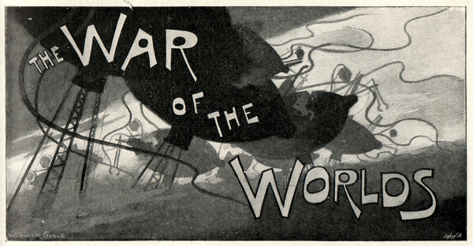
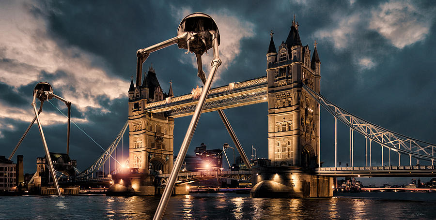

The war of the worlds H. G. Wells
Not far from me was a little one-roomed squatter's hut of wood

Surrounded by a patch of potato garden.
I struggled to my feet at last, and, crouching and making use of every chance of cover, I made a run for this.
I hammered at the door, but I could not make the people hear (if there were any people inside), and after a time I desisted,
and, availing myself of a ditch for the greater part of the way, succeeded in crawling, unobserved by these monstrous machines, into the pine woods towards Maybury.
Down the road towards Maybury Bridge there were voices and the sound of feet, but I had not the courage to shout or to go to them. I let myself in with my latchkey, closed, locked and bolted the door, staggered to the foot of the staircase, and sat down.
My imagination was full of those striding metallic monsters, and of the dead body smashed against the fence..
I crouched at the foot of the staircase with my back to the wall, shivering violently.
Under cover of this I pushed on, wet and shivering now, towards my own house.
I walked among the trees trying to find the footpath. It was very dark indeed in the wood
for the lightning was now becoming infrequent, and the hail, which was pouring down in a torrent, fell in columns through the gaps in the heavy foliage.
If I had fully realised the meaning of all the things I had seen I should have immediately worked my way round through Byfleet to Street Cobham, and so gone back to rejoin my wife at Leatherhead.
But that night the strangeness of things about me, and my physical wretchedness, prevented me, for I was bruised, weary, wet to the skin, deafened and blinded by the storm.
storm water

If I had fully realised the meaning of all the things I had seen I should have immediately worked my way round through Byfleet to Street Cobham,
and so gone back to rejoin my wife at Leatherhead. But that night the strangeness of things about me, and my physical wretchedness, prevented me, for I was bruised, weary, wet to the skin,
deafened and blinded by the storm.
I had a vague idea of going on to my own house, and that was as much motive as I had. I staggered through the trees, fell into a ditch and bruised my knees against a plank, and finally splashed
out into the lane that ran down from the College Arms. I say splashed, for the storm water was sweeping the sand down the hill in a muddy torrent. There in the darkness a man blundered into me and sent me reeling back.
The flicker
Near the top I stumbled upon something soft, and, by a flash of lightning, saw between my feet a heap of black broadcloth and a pair of boots. Before I could distinguish clearly how the man lay,
the flicker of light had passed. I stood over him waiting for the next flash. When it came, I saw that he was a sturdy man, cheaply but not shabbily dressed; his head was bent under his body, and he lay crumpled up
close to the fence, as though he had been flung violently against it.
I stepped over him gingerly and pushed on up the hill. I made my way by the police station and the College Arms towards my own house. Nothing was burning on the hillside, though from the common there still came a red glare
and a rolling tumult of ruddy smoke beating up against the drenching hail. So far as
I could see by the flashes, the houses about me were mostly uninjured. By the College Arms a dark heap lay in the road.